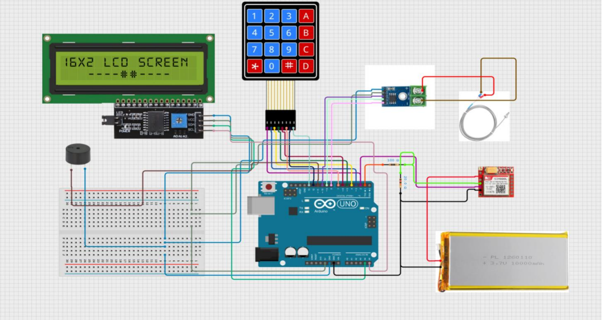
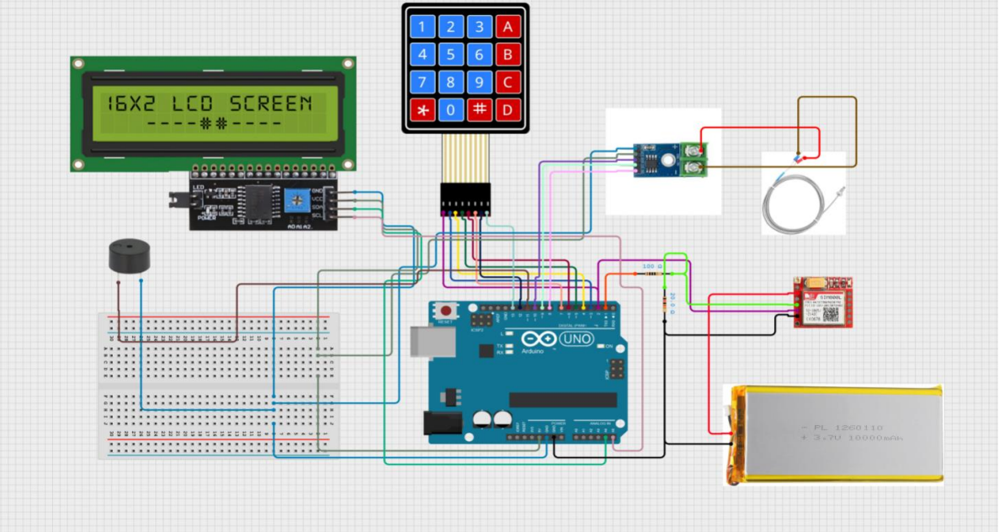

Arduino-based Industrial Temperature Monitor
📖 Description
The Industrial Temperature Monitoring System is designed to continuously monitor temperature in industrial environments and alert users when it exceeds a predefined limit.
It uses an Arduino Uno with a K-type thermocouple (MAX6675) for accurate sensing. A 16×2 I2C LCD displays live temperature and threshold values, while a 4×4 keypad allows easy configuration.
When temperature crosses the limit, a buzzer alerts locally and a GSM800L module can notify the user remotely via SMS or call.
🛠 Tech Stack
Controller: Arduino Uno
Sensor: K-type Thermocouple (MAX6675)
Display: 16×2 LCD (I2C)
Input: 4×4 Keypad
Alert: Buzzer, GSM800L